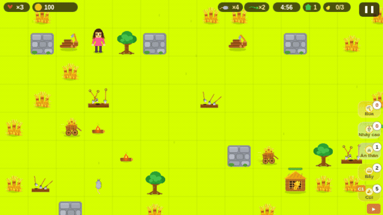
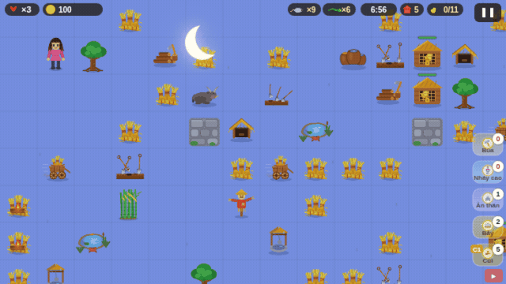
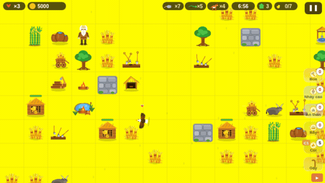
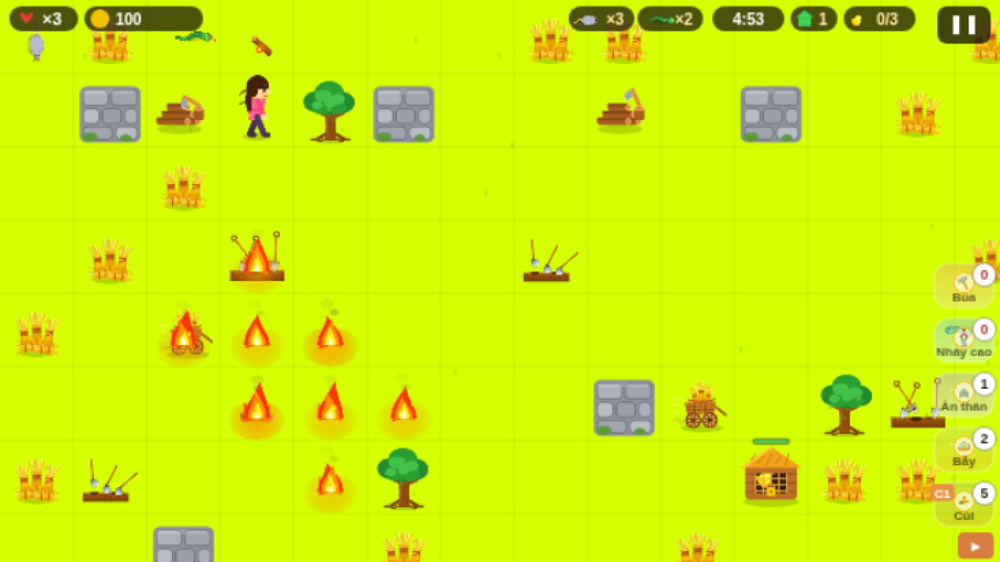
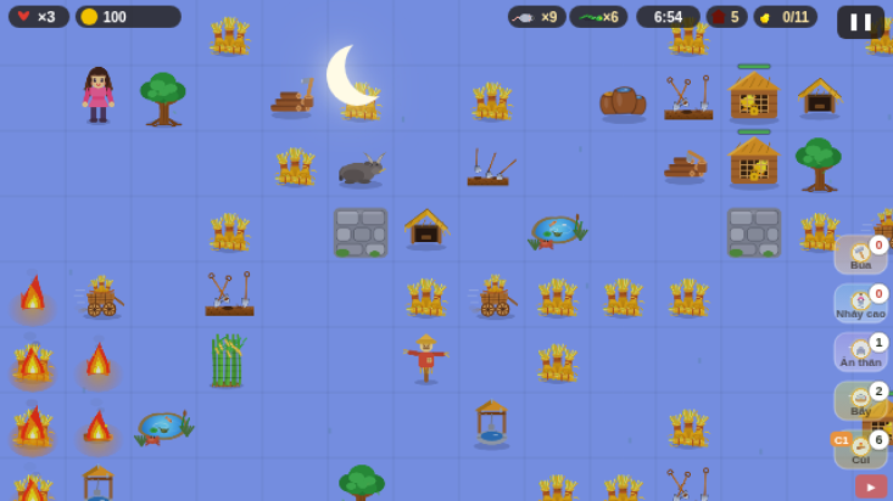
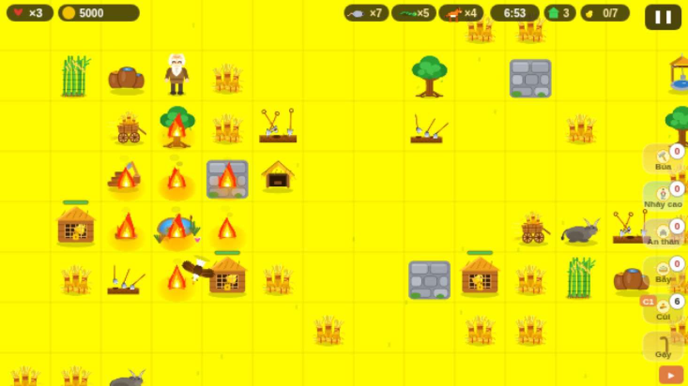
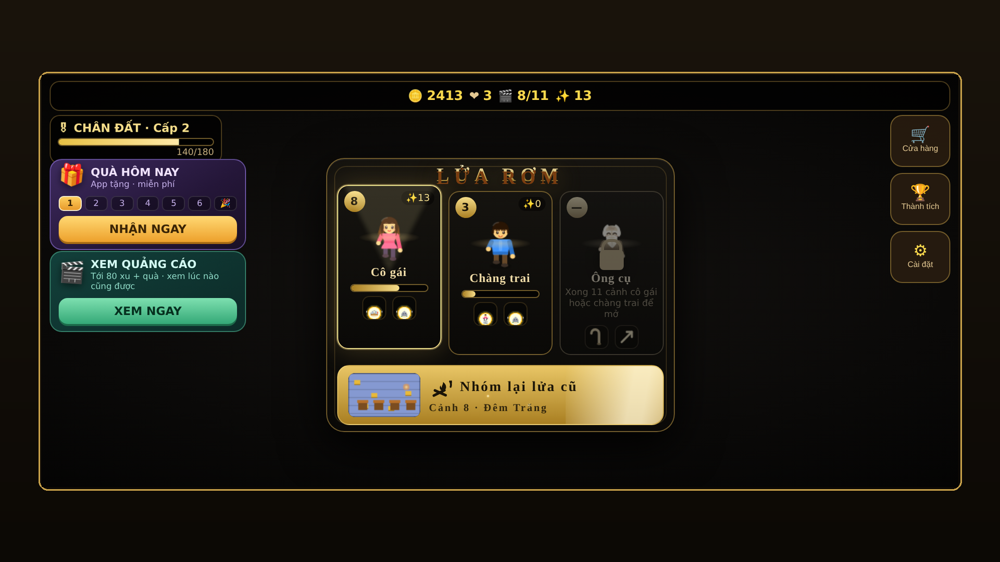
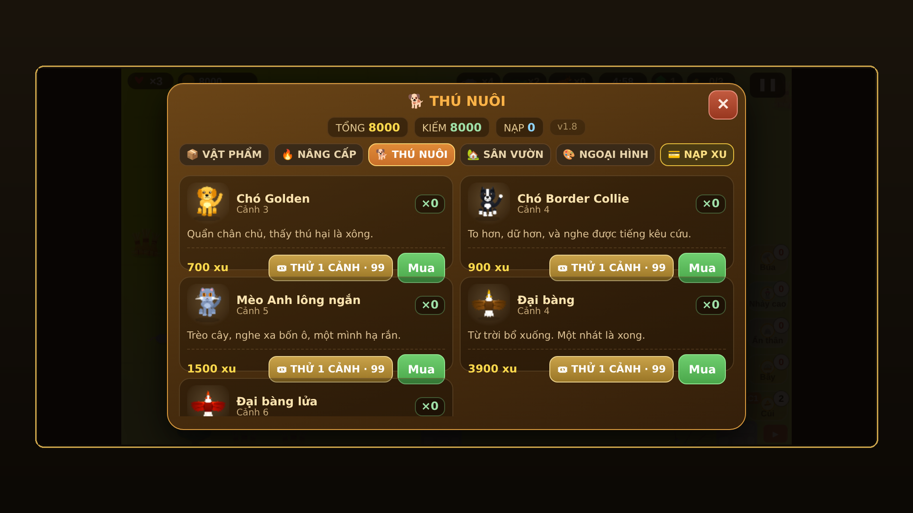
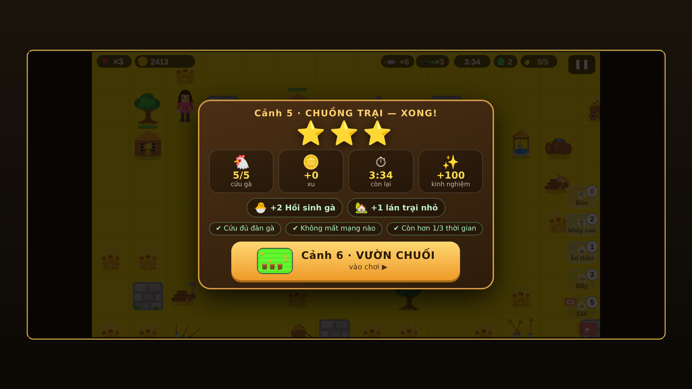

A farmyard action game for Android — by PixPop, Vietnam
Released worldwide 30 August 2026 · Free · English & Vietnamese
Google Play Email PixPopFire is the only way to find the hidden chickens — and the fastest way to kill them.
On a Vietnamese farm, chickens hide inside bundles of straw. You cannot see them and you cannot pull the straw apart. The only way to find them is to set it alight — a thrown log lands three tiles away, waits three seconds, then bursts into a cross-shaped blaze that races along the straw. The chickens are revealed, and you have two seconds to reach them before your own fire does. The same explosion that saves the flock will kill it, and will kill you, if you misjudge where you are standing.
Rats and snakes hunt the chickens while you work. From level three there are henhouses to defend, and in the old man's campaign a pack of wolves arrives. Each of the three playable characters solves this differently: the girl lays traps and turns to stone to hide, the boy leaps over whatever blocks him, and the old man walks diagonally and swings a cane that stuns everything around him. Eleven levels, five to nine minutes each, and a clock that does not stop.









| Title | Straw Fire (Vietnamese title: Lửa Rơm) |
| Developer | PixPop — solo developer, Vietnam |
| Release date | 30 August 2026, worldwide |
| Platform | Android 6.0 and above (API 23) |
| Price | Free — contains ads and optional in-app purchases |
| Genre | Action / strategy, single player, timed levels |
| Languages | English, Vietnamese |
| Content rating | PEGI 7 · ESRB Everyone · USK 6+ · IARC 7+ |
| Connection | Requires an internet connection |
| Package name | com.pixpop.strawfire |
| Google Play | play.google.com/store/apps/details?id=com.pixpop.strawfire |
| Press contact | nguyenluuhonghai@gmail.com — replies within 24 hours |
PixPop is a one-person studio in Vietnam, and Straw Fire is its first game on Google Play. The game runs on a hand-written HTML5 engine inside a native Android shell, with no third-party game framework — every sprite, sound and level was made by the same person who wrote the code.
All screenshots, GIFs, the icon and the logo on this page may be used freely in articles, videos, streams and reviews without asking permission, provided the game is credited as “Straw Fire by PixPop”. If you need a different resolution, a specific scene, a longer capture or a promo code, email nguyenluuhonghai@gmail.com and it will be sent the same day.